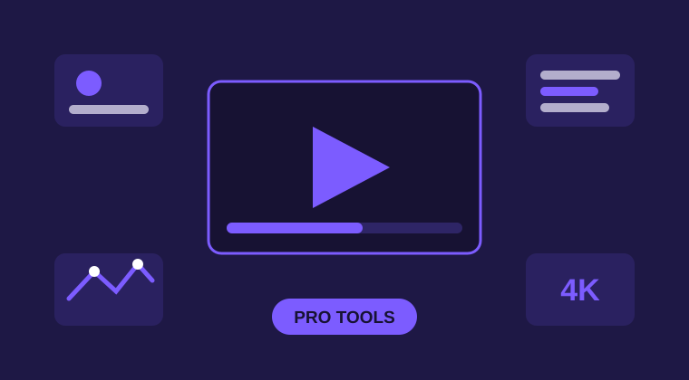

The free CapCut app already edits well. The Pro plan adds a deeper set of tools inside the same editor, and those in-app tools are what CapCut Pro MOD APK unlocks. This page goes through them one group at a time, in plain words, so you know exactly what changes when you edit with the Pro set open. Nothing here needs an account trick or a second app. Every tool below sits inside the normal editor screens.

Premium Effects, Filters and Transitions
The Pro library holds the effects and filters that give videos a finished look: film style color grades, glow and light effects, smooth slow motion transitions, and the trending shake and zoom cuts used in short videos. In the free app, many of these show a small Pro tag and stop at the paywall. In the MOD they apply like any normal tool. Pick one or two that match your clip instead of stacking five, because a light hand keeps the video looking clean and the export file smaller. New to this build? The overview on the home page of this site covers what the MOD is and the current version facts.
Premium Templates, Fonts and Text Styles
Templates do the hard layout work for you. A Pro template brings its own cuts, music timing, and text animation, and you only swap in your clips. The MOD opens the premium template set along with the Pro fonts and ready made text styles, which matter more than people expect. A strong title font and a readable caption style are what make a phone video look like it came from a much bigger setup.
No Watermark and No Ads While Editing
Exports from this build carry no watermark, including videos that use premium templates. That one change is why many creators look for the MOD in the first place, because a clean corner keeps the video usable for clients, shops, and brand pages. Editing is also free of ads, so previews play without interruptions and long sessions stay calm. Neither point changes how your video looks by itself, but together they remove the two things that most often spoil a finished export.
AI Background Remover
The background remover cuts a person or product out of a clip with one tap, with no green screen behind them. You can then place the subject over a new background, a solid color, or a text layer. It works best on clips with clear light and a steady camera, where the edge of the subject is easy to see. Busy backgrounds and fast movement can leave rough edges, so check the cutout frame by frame before you export a clip that matters.
Automatic Captions
Auto captions listen to the speech in a clip and write it as text on the timeline. Most viewers watch short videos with the sound off, so captions decide whether your words land at all. The Pro caption styles in this build add cleaner fonts, word by word highlighting, and better placement controls. Always read the captions once before export. Names, places, and fast speech still trip the tool up, and one fixed word is faster than a confused comment section later.
Keyframe Animation
Keyframes tell an element where to be at two points in time, and the app fills in the movement between them. That is how creators make smooth zooms into a product, stickers that follow a moving hand, and text that slides in and settles. It is a small tool with a big effect, because gentle movement is the clearest sign of a careful edit. Start with two keyframes and a slow move. Fast jumps between keyframes are the main reason home made animations look jerky.
Export up to 4K at 60fps
The top export setting in this build is 4K resolution at 60 frames per second, on phones whose hardware supports it. Use it when the source clips are high quality and the video will be seen on a big screen. For normal phone viewing, 1080p exports faster, takes far less storage, and looks nearly the same on social apps, which compress uploads anyway. Match the export to where the video will actually play instead of always picking the largest number.
Honest limits: everything above is an in-app editing tool, and that is what the MOD unlocks. Online and server side features are different. Cloud storage, account sync between devices, and some AI credits run on CapCut servers and may not work in a modified build. If your work depends on those online parts, the standard app is the right tool for that job.
Start Editing
If the build is not on your phone yet, follow the step by step install guide first, run the short test project it describes, and then come back here and work through the tools in the order on this page.